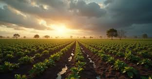
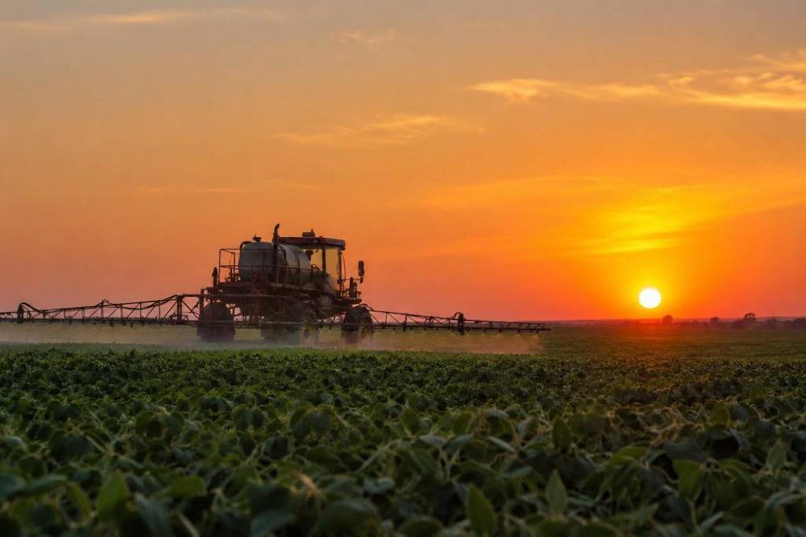

A evolução da potência agrícola brasileira através da inovação e preservação.
Explorar VisãoHistoricamente, o Brasil consolidou-se como uma das maiores potências agrícolas do mundo, desempenhando um papel crucial na segurança alimentar global.
No entanto, o "Agro Forte" atual não é medido apenas por recordes de exportação. A nova métrica de sucesso é a capacidade de integrar inovação tecnológica e preservação ambiental. O desafio atual é harmonizar a produtividade econômica com a proteção absoluta dos ecossistemas.

imagem gerada por IA
Diferente do modelo extensivo do passado, utilizamos drones e sensores de última geração.
Otimização rigorosa de insumos e redução drástica do desperdício de água através de algoritmos.
Produzir mais em menos espaço, poupando nossos biomas e reduzindo a pegada de carbono.
A manutenção ambiental é uma necessidade estratégica. O agronegócio depende diretamente de serviços ecossistêmicos, como o ciclo de chuvas e a polinização natural.
Práticas como o Plantio Direto e a Integração Lavoura-Pecuária-Floresta (ILPF) permitem que a produção regenere o solo e atue no sequestro de gases de efeito estufa.
A sustentabilidade transformou-se em um diferencial competitivo crucial para um mercado internacional cada vez mais rigoroso com a procedência.

imagem gerada por IA
Para que o equilíbrio seja pleno, é vital que o Governo Federal amplie o acesso ao crédito para práticas verdes e invista massivamente em infraestrutura tecnológica no campo.
"Somente pela convergência entre ciência, políticas públicas e consciência ambiental, o Brasil manterá seu protagonismo sem comprometer o patrimônio natural do planeta."